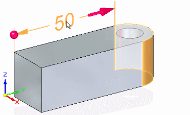
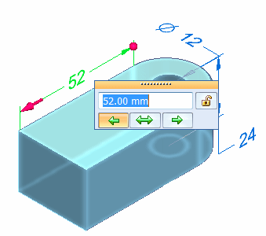

Select faces to be modified by PMI dimension edits
When you select a dimension, all logically connected faces are included automatically in the select set. This makes it easy to modify the part without having to know how it was constructed.
Before you edit a dimension, you can preview what will be affected by the change. Based on this, you can add and remove faces from the select set using the Design Intent panel and the Advanced Design Intent panel. See Using the Design Intent panel and Using the Advanced Design Intent panel for more information.
-
Do the following:
-
Place the cursor on the dimension text, but do not click.
The preview highlights all connected faces that will be affected by the dimension edit. Inspect the model to see which parts have been preselected logically.
Example:
-
Position the cursor on the dimension text closest to the side you want to modify.
As you move the cursor, the 3D terminator display updates to show the direction in which the edit will be applied.
-
-
Click the dimension text.
-
(Optional—Change the selection set) In the Using the Advanced Design Intent panel , under Maintain, clear the relationships that you do not want to include in the selection set, and set the relationships that you want to add to it.
-
(Optional—Change the face solve type) On the Modify Dimension command bar, change how the faces connected to the selection react to the dimension change.
-
In the Dimension Value Edit dialog box, type a new value in the box and press Enter.
Example:
Tip:You can change the direction of edit before you press Enter by clicking a direction arrow button on the Dimension Value Edit dialog box or by clicking a 3D terminator on the dimension line.
Tip:You can specify an equal dimension edit in both directions by clicking the symmetric arrow button.